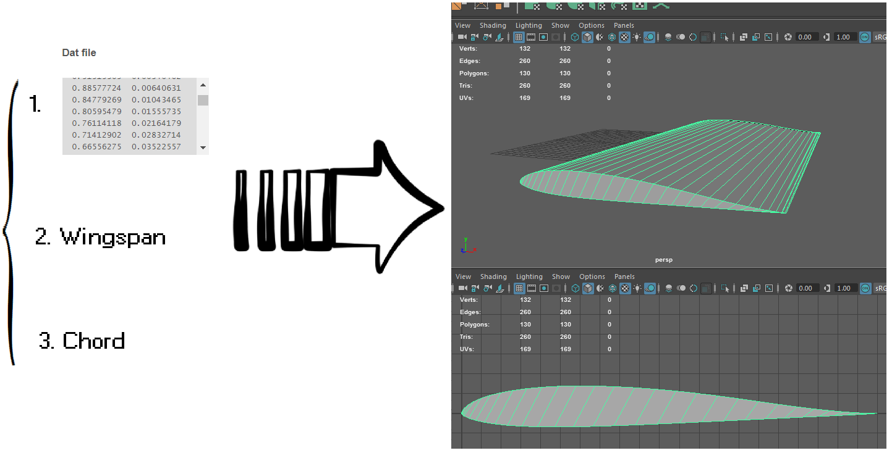
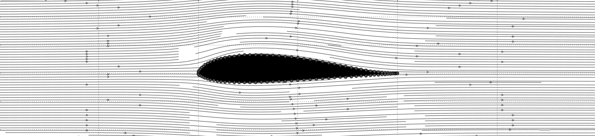

airfoil2maya provides a MEL (Maya Embedded Language) procedure for producing a 3d wing object based on: (i) a Selig .dat airfoil, (ii) wingspan, and (iii) chord. please see the project page for detailed documentation.

quadrotor simulator class in matlab for guidance, navigation and control studies. quadrotor dynamics are modeled to include propellers counter-torques and gyroscopic effects. control laws implement an equivalent Pixhawk multicopter attitude controller. please see the project wiki for detailed documentation.
linear-varying vortex panel method for flow modeling in python. currently, allows for flow visualization of inviscid incompressible airflow through an airfoil. please see the project wiki for detailed documentation.

open-source project that allows for matlab real-time visualization/processing of Android-powered mobile phone IMU/GNSS sensor data. please see the project wiki for detailed documentation.
an ISAE designed tilt-body convertible drone capable of performing both hover and fixed-wing flight.